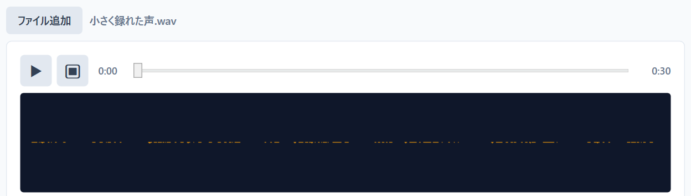
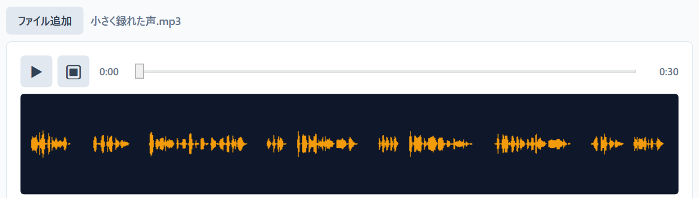
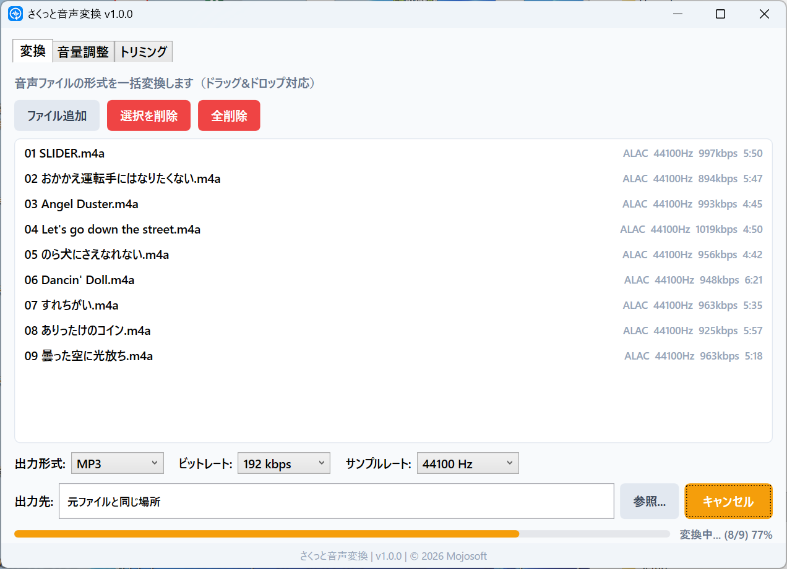
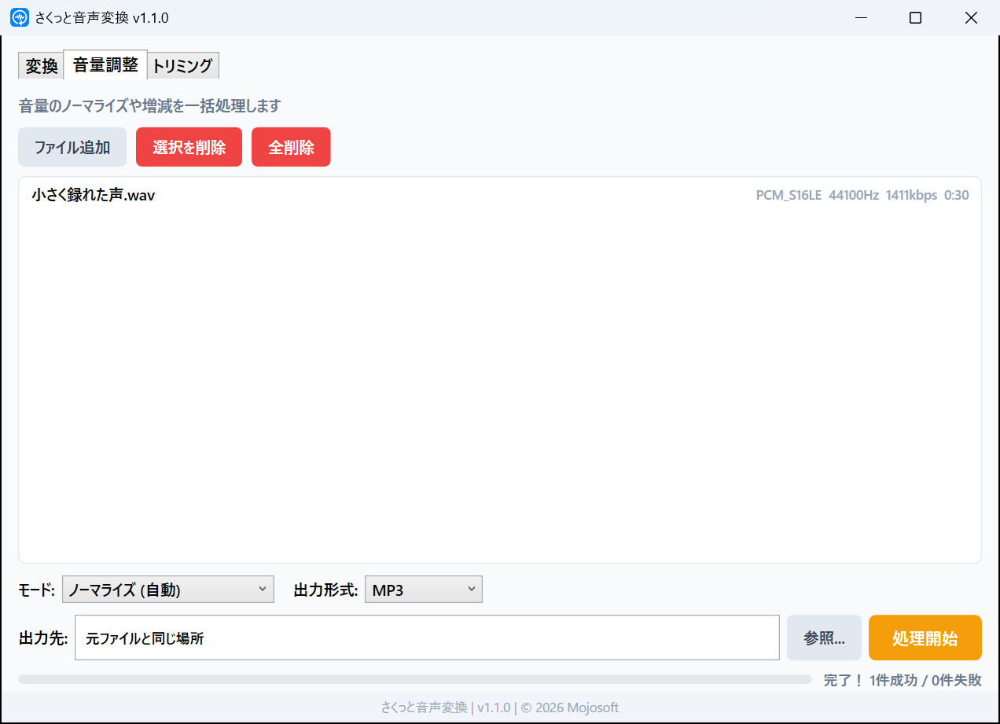
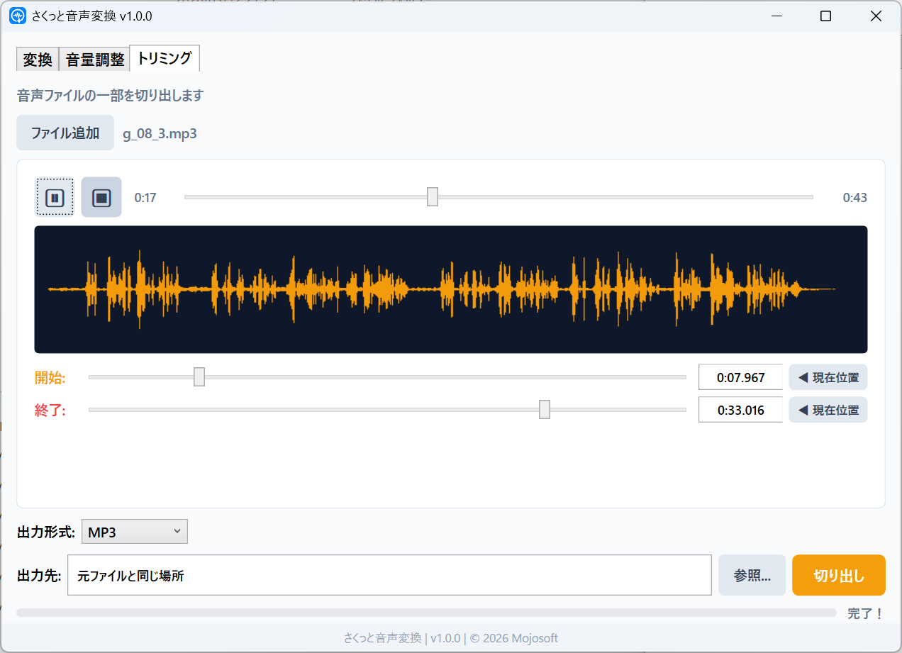

v1.1.1
- 動作の土台（.NET）を最新の長期サポート版に更新し、安全性を高めました
音量のノーマライズで、録音の大きさをそろえます。MP3・WAV・FLAC などへの形式の変換、波形を見ながらの切り出しも、このアプリひとつで。処理はすべて PC の中で行います。


2 枚の画面は、同じ録音の処理前と処理後のファイルを、アプリの波形表示で開いたところです。
ラウドネス −42.2 → −15.9 LUFS（FFmpeg の ebur128 で測定）。宣伝動画のナレーション（30 秒）の音量を 22 dB 下げた録音を、ノーマライズした結果です。ノーマライズは、放送などで使われる基準（EBU R128）に合わせ、−16 LUFS を目安に音量をそろえます。
Microsoft Store から購入して、すぐに使えます。アプリのアカウント登録はいりません。
まず音声を入れる
音声ファイルをドラッグ＆ドロップ。変換と音量調整は、何本でもまとめて処理できます。MP3・WAV・M4A など、よく使う形式をそのまま読み込めます。

つぎに仕上がりを選ぶ
形式やビットレート、音量の整え方を選びます。音量調整は「ノーマライズ (自動)」と、dB で指定する「音量増減」の 2 通りです。

あとは開始を押す
新しいファイルとして保存するので、元のファイルはそのまま残ります。切り出しは、波形を見ながら開始と終了の位置を決められます。

よく使う 3 つの作業を、タブを切り替えるだけで。
小さすぎる・大きすぎる録音を、聞きやすい大きさにそろえます。
上げたい・下げたい分だけ、dB で指定します。
MP3・WAV・FLAC・AAC（M4A）・OGG に、まとめて変換します。
波形を見ながら、必要な部分だけを切り出します。
音声の処理に使う FFmpeg をアプリに内蔵しています。
結果はいつも、新しいファイルとして保存します。
お手元の音声ファイルを、使いたい形・大きさにそろえます。
ノーマライズで、聞き取りやすい音量にそろえられます。聞き直しや文字起こしの前に。
何本ものファイルをまとめて処理して、音の大きさのばらつきをなくします。
どの機器でも再生しやすい MP3 に、まとめて変換できます。
長い録音から、使いたい部分だけを波形を見ながら切り出せます。
オンラインの変換サイトと違い、音声をどこかにアップロードすることはありません。
開発元（Mojosoft）に音声やファイル名が送られることはありません。アカウント登録も、利用状況の収集もありません。詳しくは プライバシーポリシー をご覧ください。
よく使われる音声の形式を、そのまま読み込めます。
| 読み込める音声 | MP3WAVFLACAACM4AOGGWMAAIFFOpusAC3トリミングの試し聞きは、形式によってはできないことがあります（その場合も切り出せます）。 |
|---|---|
| 書き出せる形式 | MP3WAVFLACAAC（M4A）OGG 変換・音量調整・トリミングのどれでも選べます |
| 保存先と名前 | 元と同じ場所、または指定したフォルダ。名前は元のまま（形式に合わせて拡張子が変わります）で、同じ名前のファイルがあるときは「_1」などの番号を付けて、上書きしません。 |
| 表示言語 | 日本語・英語（Windows の言語設定に合わせて切り替わります） |
| 動作環境 | Windows 10（バージョン 2004）以降・64 ビット音声の処理には FFmpeg（LGPL v2.1）を使っています（アプリに内蔵）。 |
はい。「音量調整」で「ノーマライズ (自動)」を選んで処理すると、放送などで使われる基準（EBU R128）に合わせて、−16 LUFS を目安に音量をそろえます。
はい。ファイルをまとめて入れれば、順番に自動で処理します。
はい。新しいファイルとして保存します。同じ名前のファイルがあるときは番号を付けるので、上書きしません。
はい。「変換」で MP3 を選べば、まとめて変換できます。
はい。「トリミング」で波形を見ながら、開始と終了の位置を決めて切り出せます。
はい。「音量増減 (dB指定)」で、−20〜+20 dB の範囲で指定できます。
はい。変換も音量調整も、アプリに内蔵した FFmpeg で PC の中で行います。
はい。Microsoft Store で一度購入すれば、月額料金なしで使い続けられます。
Microsoft Store 版は自動で最新版に更新されます。